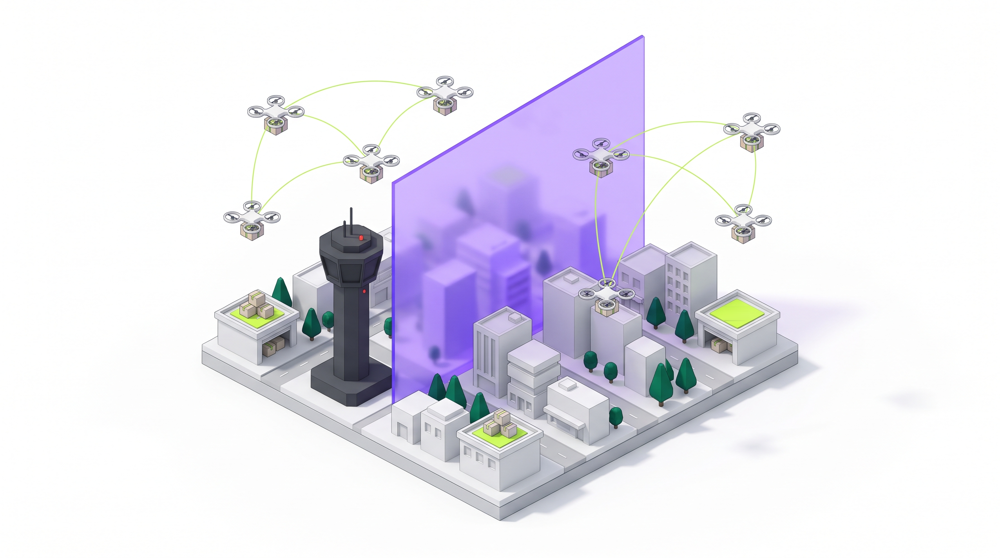

“Relying on a single central controller is a major risk. If the ‘brain’ loses connection, the entire fleet stops.”
One hub assigns every job. If it fails, every drone goes idle.
Buildings and weather split the fleet into groups that cannot hear each other.
Two groups that cannot talk both claim the same parcel.
